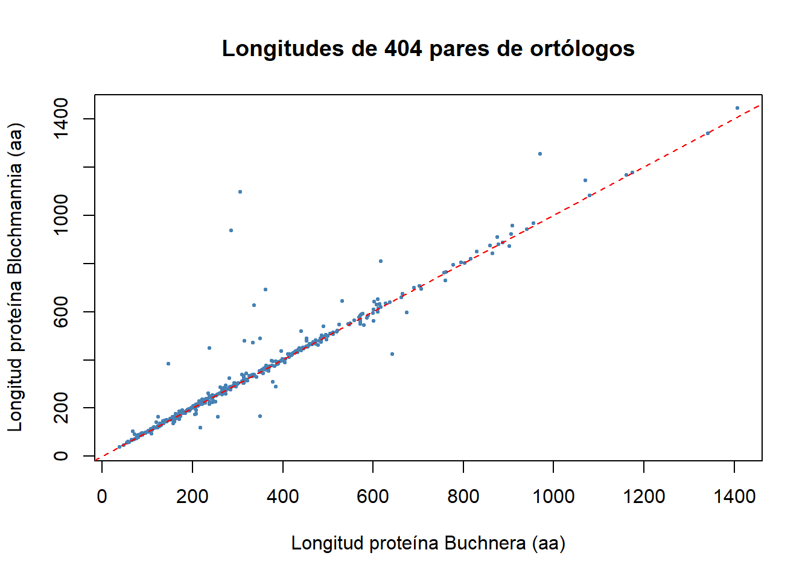

BiocManager::install('Biostrings')Practica 8: Principio de BLAST
Preparación
Necesitamos tener instalado el paquete ncbi-blast+, que en Linux y en WSL2 se puede instalar mediante sudo apt install ncbi-blast+. Este método no instalará la versión más reciente, pero será suficiente. También podemos seguir las instrucciones de instalación en:https://www.ncbi.nlm.nih.gov/books/NBK569861/.
En el ejercicio 3 necesitaremos también los programas datasets y dataformat, que podéis descargar desde este enlace: https://www.ncbi.nlm.nih.gov/datasets/docs/v2/command-line-tools/download-and-install/. (los instalamos ya en la práctica 4)
Es recomendable guardar los ejecutables en una carpeta del PATH, yo personalmente los guardo en /usr/local/bin/. Además, usaremos el paquete de R Biostrings, que en caso de no tener instalado, podéis instalar con BiocManager (no con install.packages()!):
Objetivos
BLAST ejecuta alineamientos locales entre una secuencia “problema” o query, generalmente no muy larga, y un conjunto grande de secuencias (la base de datos) entre las que esperamos encontrar alguna secuencia homóloga a la query. Cada secuencia de la base de datos que pueda alinearse con la query se la llama subject en el alineamiento. Los objetivos de esta práctica son:
- Identificar proteínas ortólogas entre dos especies con BLASTP.
- Realizar un PSI-BLAST contra la base de datos Swissprot.
- Determinar el origen de las lecturas que no pudieron ser mapeadas a su genoma de referencia, usando BLASTN remoto.
Datos
Datos del primer ejercicio
En el primer ejercicio, usaremos los proteomas de dos especies bacterianas endosimbiontes, con genomas reducidos (para facilitar las búsquedas): Buchnera aphidicola (107806) y Blochmannia ocreatus (251538). Los proteomas se pueden descargar desde uniprot (pones el ID, entras en la Entry ¡NO DESCARGAS!, y descargas el gene count). Los descargamos comprimidos en la carpeta de data.
Te dan el archivo comprimido, pero hay que descomprimirlo (o lo podemos leer comprimido también, pero es más incómodo). Para descomprimirlo, usamos:
cd "$(p=$(pwd); while [ ! -f "$p"/*.Rproj ] && [ "$p" != "/" ]; do p=$(dirname "$p"); done; echo "$p")"
if [ ! -e ~/Bioinformatica/data/Practica8/buchnera.fa ]; then
gunzip -c ~/Bioinformatica/data/Practica8/UP000001806_107806.fasta.gz > ~/Bioinformatica/data/Practica8/buchnera.fa
fi
if [ ! -e ~/Bioinformatica/data/Practica8/blochmannia.fa ]; then
gunzip -c ~/Bioinformatica/data/Practica8/UP001056834_251538.fasta.gz > ~/Bioinformatica/data/Practica8/blochmannia.fa
fiDatos del segundo ejercicio
Para el segundo ejercicio, necesitamos descargar la base de datos de Swissprot para BLAST. Podemos hacerlo de dos maneras. En cualquier caso, los archivos descargados y descomprimidos deben guardarse en la carpeta data. Por tanto, los comandos siguientes deberan de ejecutarse desde esa carpeta. Lo hacemos siguiendo el siguiente comando:
cd "$(p=$(pwd); while [ ! -f "$p"/*.Rproj ] && [ "$p" != "/" ]; do p=$(dirname "$p"); done; echo "$p")"
if [ ! -e /mnt/c/Documents/Bioinformatica/data/Practica8/swissprot.tar.gz ]; then
(cd /mnt/c/Documents/Bioinformatica/data/Practica8 && update_blastdb --decompress swissprot)
fiDatos del tercer ejercicio
Pinchando aquí (https://aulavirtual.uv.es/pluginfile.php/5994243/mod_resource/content/3/contaminacion.fa.gz) podéis descargar el archivo comprimido contaminacion.fa.gz. No lo abráis ni lo descomprimáis. Sólo guardadlo en la carpeta de datos tal como está. En adelante supondré que podéis acceder al archivo mediante ./data/Practica_08 desde la carpeta general.
Ejercicio 1 — Ortólogos recíprocos Buchnera vs Blochmannia
1.1 Enmascarar e indexar el proteoma de Buchnera
set +e
DATA=/mnt/c/Documents/Bioinformatica/data/Practica8
RES=/mnt/c/Documents/Bioinformatica/results/Practica8
if [ ! -e "$RES/buchnera.phr" ]; then
# Creamos un archivo para enmascarar zonas de baja complejidad:
if [ ! -e "$RES/buchnera_seg.asnb" ]; then
segmasker -in "$DATA/buchnera.fasta" \
-infmt fasta \
-parse_seqids \
-outfmt maskinfo_asn1_bin \
-out "$RES/buchnera_seg.asnb"
fi
# Y indexamos el archivo FASTA para BLAST:
makeblastdb -in "$DATA/buchnera.fasta" \
-input_type fasta \
-dbtype prot \
-parse_seqids \
-mask_data "$RES/buchnera_seg.asnb" \
-out "$RES/buchnera" \
-title "Proteoma de Buchnera"
fi
true1.2 Enmascarar e indexar el proteoma de Blochmannia
set +e
DATA=/mnt/c/Documents/Bioinformatica/data/Practica8
RES=/mnt/c/Documents/Bioinformatica/results/Practica8
if [ ! -e "$RES/blochmannia.phr" ]; then
if [ ! -e "$RES/blochmannia_seg.asnb" ]; then
segmasker -in "$DATA/blochmannia.fasta" \
-infmt fasta \
-parse_seqids \
-outfmt maskinfo_asn1_bin \
-out "$RES/blochmannia_seg.asnb"
fi
makeblastdb -in "$DATA/blochmannia.fasta" \
-input_type fasta \
-dbtype prot \
-parse_seqids \
-mask_data "$RES/blochmannia_seg.asnb" \
-out "$RES/blochmannia" \
-title "Proteoma de Blochmannia"
fi1.3 BLASTP de Buchnera aphidicola hacia Blochmannia ocreatus
set +e
DATA=/mnt/c/Documents/Bioinformatica/data/Practica8
RES=/mnt/c/Documents/Bioinformatica/results/Practica8
if [ ! -e "$RES/buc2blo.txt" ]; then
blastp -query "$DATA/buchnera.fasta" \
-db "$RES/blochmannia" \
-out "$RES/buc2blo.txt" \
-outfmt '6 qseqid sseqid qlen slen length evalue bitscore' \
-evalue 0.001 \
-max_target_seqs 1
fi
echo "Hits buc → blo : $(wc -l < "$RES/buc2blo.txt")"
true1.4 BLASTP de Blochmannia ocreatus hacia Buchnera aphidicola
set +e
DATA=/mnt/c/Documents/Bioinformatica/data/Practica8
RES=/mnt/c/Documents/Bioinformatica/results/Practica8
if [ ! -e "$RES/blo2buc.txt" ]; then
blastp -query "$DATA/blochmannia.fasta" \
-db "$RES/buchnera" \
-out "$RES/blo2buc.txt" \
-outfmt '6 qseqid sseqid qlen slen length evalue bitscore' \
-evalue 0.001 \
-max_target_seqs 1
fi
echo "Hits blo → buc : $(wc -l < "$RES/blo2buc.txt")"
true/bin/bash: line 1: "/blo2buc.txt": No such file or directory
Command line argument error: Argument "query". File is not accessible: `/blochmannia.fasta'
Hits blo → buc : 1.5 Comparación de resultados en R
RES <- "~/Bioinformatica/results/Practica8"
buc2blo <- read.table(
file.path(RES, "buc2blo.txt"),
col.names = c('query', 'subject', 'qlen', 'slen',
'length', 'evalue', 'bitscore')
)
blo2buc <- read.table(
file.path(RES, "blo2buc.txt"),
col.names = c('query', 'subject', 'qlen', 'slen',
'length', 'evalue', 'bitscore')
)
head(buc2blo) query subject qlen slen length
1 sp|P57290|AKH_BUCAI tr|A0ABY4SUV1|A0ABY4SUV1_9ENTR 816 819 820
2 sp|P57139|GLMU_BUCAI tr|A0ABY4SVX7|A0ABY4SVX7_9ENTR 459 467 443
3 sp|P57244|CARB_BUCAI tr|A0ABY4ST92|A0ABY4ST92_9ENTR 1079 1082 1076
4 sp|P57245|CARA_BUCAI tr|A0ABY4STA7|A0ABY4STA7_9ENTR 387 382 374
5 sp|P57265|FOLC_BUCAI tr|A0ABY4SUG5|A0ABY4SUG5_9ENTR 411 425 414
6 sp|P57266|KPRS_BUCAI tr|A0ABY4SVP1|A0ABY4SVP1_9ENTR 315 320 313
evalue bitscore
1 0.00e+00 835
2 4.08e-141 407
3 0.00e+00 1443
4 1.32e-156 441
5 5.43e-108 320
6 0.00e+00 530head(blo2buc) query subject qlen slen length
1 tr|A0ABY4SVZ2|A0ABY4SVZ2_9ENTR sp|P57500|CYSG_BUCAI 481 473 459
2 tr|A0ABY4SSB9|A0ABY4SSB9_9ENTR sp|P57398|SYS_BUCAI 429 427 430
3 tr|A0ABY4SSC6|A0ABY4SSC6_9ENTR sp|P57397|SERC_BUCAI 364 361 363
4 tr|A0ABY4SSK0|A0ABY4SSK0_9ENTR sp|P57203|HIS7_BUCAI 359 353 358
5 tr|A0ABY4SSK3|A0ABY4SSK3_9ENTR sp|P57207|HIS2_BUCAI 228 215 205
6 tr|A0ABY4SSL2|A0ABY4SSL2_9ENTR sp|P57254|NUOCD_BUCAI 595 600 593
evalue bitscore
1 5.94e-166 472
2 5.84e-161 455
3 2.76e-142 403
4 1.45e-141 400
5 4.00e-66 198
6 0.00e+00 8761.6 Identificación de los recíprocos (solución del profesor)
buc2blo$reverse <- blo2buc[
match(buc2blo$subject, blo2buc$query),
'subject'
]
coincidencias <- buc2blo[
buc2blo$query == buc2blo$reverse,
c('query', 'subject')
]
cat("Pares de ortólogos recíprocos:", nrow(coincidencias), "\n")Pares de ortólogos recíprocos: 404 head(coincidencias) query subject
1 sp|P57290|AKH_BUCAI tr|A0ABY4SUV1|A0ABY4SUV1_9ENTR
2 sp|P57139|GLMU_BUCAI tr|A0ABY4SVX7|A0ABY4SVX7_9ENTR
3 sp|P57244|CARB_BUCAI tr|A0ABY4ST92|A0ABY4ST92_9ENTR
4 sp|P57245|CARA_BUCAI tr|A0ABY4STA7|A0ABY4STA7_9ENTR
5 sp|P57265|FOLC_BUCAI tr|A0ABY4SUG5|A0ABY4SUG5_9ENTR
6 sp|P57266|KPRS_BUCAI tr|A0ABY4SVP1|A0ABY4SVP1_9ENTR1.7 Visualización (longitudes de las parejas ortólogas)
Para ganar confianza en que los resultados tienen sentido, comparamos las longitudes de cada pareja: si son ortólogas, deberían parecerse y caer cerca de la diagonal.
ortos <- merge(coincidencias, buc2blo, by = c("query", "subject"))
plot(ortos$qlen, ortos$slen,
pch = 20, cex = 0.6, col = "steelblue",
xlab = "Longitud proteína Buchnera (aa)",
ylab = "Longitud proteína Blochmannia (aa)",
main = paste("Longitudes de", nrow(ortos), "pares de ortólogos"))
abline(0, 1, col = "red", lty = 2)
Echa un vistazo a estas tablas de resultados. ¿Sabrías identificar las parejas de proteínas que son recíprocamente la que más se parece una a la otra??
Sí, se identifican cruzando las dos tablas de resultados. Para cada proteína de Buchnera (query), se observa cuál fue su mejorcoincidencia en Blochmannia . Luego, se comprueba si esa misma proteína de Blochmannia, al usarla como query en la búsqueda inversa, devuelve la proteína original de Buchnera como su subject de mayor puntuación. En R, esto se confirma cuando la columna original coincide con la invertida.
¿Qué datos te gustaría representar gráficamente para ganar confianza en que los resultados son correctos y tienen sentido? La opción más útil es representar gráficamente las longitudes de las parejas seleccionadas (qlen vs slen). Al ser proteínas ortólogas, deberían tener un tamaño casi idéntico, por lo que los puntos deben caer muy cerca de la línea diagonal.
Ejercicio 2 — PSI-BLAST
2.1 Extracción de la secuencia query desde Swissprot
set +e
DATA=/mnt/c/Documents/Bioinformatica/data/Practica8
RES=/mnt/c/Documents/Bioinformatica/results/Practica8
# Como Swissprot debería estar ya descargada en data/, podemos sacar
# de ahí la secuencia de la proteína escogida:
if [ ! -e "$RES/P39615.fa" ]; then
blastdbcmd -db "$DATA/swissprot" -entry P39615 -out "$RES/P39615.fa"
fi
cat "$RES/P39615.fa"
true2.2 PSI-BLAST iterativo
set +e
DATA=/mnt/c/Documents/Bioinformatica/data/Practica8
RES=/mnt/c/Documents/Bioinformatica/results/Practica8
# Y ahora la usamos como query en psi-blast:
if [ ! -e "$RES/P39615.blastout.txt" ]; then
psiblast -db "$DATA/swissprot" \
-query "$RES/P39615.fa" \
-out "$RES/P39615.blastout.txt" \
-evalue 0.1 \
-outfmt 7 \
-inclusion_ethresh 0.001 \
-num_iterations 7 \
-matrix BLOSUM62
fi
echo "Iteraciones realizadas: $(grep -c 'Iteration' "$RES/P39615.blastout.txt")"
true2.3 ¿Hemos rescatado al resto de la superfamilia?
RES=/mnt/c/Documents/Bioinformatica/results/Practica8
for p in Q9CC91 P39615 B1AJI8 P47343 Q5UPT2 Q6UDG6 A1AFY9 O59825 P30314; do
if grep -q -w "$p" "$RES/P39615.blastout.txt"; then
echo "✓ $p encontrado"
else
echo "✗ $p NO encontrado"
fi
done
trueConsulta la ayuda de psiblast y asegúrate de entender para qué sirven los argumentos que hemos usado. Por ejemplo, ¿cuál es la diferencia entre -evalue y -inclusion_ethresh?¿Cómo harías que la búsqueda fuera más sensible todavía?
Diferencia entre -evalue y -inclusion_ethresh
-evalue 0.1es el umbral para mostrar un hit en la salida. Bastante permisivo, para no perder candidatos.-inclusion_ethresh 0.001es el umbral para incluir un hit en la matriz PSSM de la siguiente iteración. Es mucho más estricto, porque un falso positivo aquí contamina las iteraciones posteriores.
Para hacer la búsqueda más sensible
- Aumentar
-num_iterations(10 o 15). - Cambiar a una matriz más sensible:
-matrix BLOSUM45. - Aflojar
-inclusion_ethresh(cuidao profile drift).
Ejercicio 3 — Origen de la contaminación en lecturas de Aphis aurantii
3.1 Selección aleatoria de 20 secuencias
suppressPackageStartupMessages(library('Biostrings'))
DATA <- "~/Bioinformatica/data/Practica8"
RES <- "~/Bioinformatica/results/Practica8"
unmapped <- readDNAStringSet(file.path(DATA, "contaminacion.fa.gz"))
n <- length(unmapped)
cat("Total de lecturas no mapeadas:", n, "\n")Total de lecturas no mapeadas: 33174 set.seed(42) # quítalo si quieres una muestra distinta cada vez
muestra <- unmapped[sample(1:n, 20)]
writeXStringSet(muestra, file.path(RES, "muestra.fa"))
head(names(muestra))[1] "SRR13258790.287025" "SRR13258790.462797" "SRR13258790.260862"
[4] "SRR13258790.293293" "SRR13258790.393177" "SRR13258790.713265"3.2 BLASTN remoto contra nr
set +e
RES=/mnt/c/Documents/Bioinformatica/results/Practica8
cd "$RES"
if [ ! -e resultado.txt ]; then
blastn -query muestra.fa \
-db nr \
-out resultado.txt \
-outfmt '6 qaccver saccver length qlen qstart qend evalue bitscore staxid' \
-max_target_seqs 1 \
-evalue 0.001 \
-remote 2> /dev/null
fi
echo "Hits obtenidos: $(wc -l < resultado.txt)"
head resultado.txt
true3.3 Identificación taxonómica con datasets y dataformat
set +e
RES=/mnt/c/Documents/Bioinformatica/results/Practica8
cd "$RES"
# Extraemos los identificadores taxonómicos (columna 9) de "resultado.txt":
cut -f 9 resultado.txt | sort | uniq | paste -sd ',' > taxids.txt
cat taxids.txt
# Generamos una tabla con información taxonómica de esos identificadores:
if [ ! -e taxreport.txt ]; then
datasets summary taxonomy taxon $(cat taxids.txt) --as-json-lines | \
dataformat tsv taxonomy --template tax-summary > taxreport.txt
fi
head taxreport.txt
true3.4 Análisis en R: hemípteros vs el resto
RES <- "~/Bioinformatica/results/Practica8"
# Resultados del BLAST
blast <- read.table(file.path(RES, "resultado.txt"),
col.names = c("qaccver", "saccver", "length", "qlen",
"qstart", "qend", "evalue", "bitscore", "taxid"),
sep = "\t", quote = "", stringsAsFactors = FALSE)
# Informe taxonómico
tax <- read.table(file.path(RES, "taxreport.txt"),
header = TRUE, sep = "\t",
quote = "", stringsAsFactors = FALSE)
# Mostramos qué columnas tiene tax para que se vea en el render
cat("Columnas de tax:\n"); print(names(tax))Columnas de tax: [1] "Query" "Taxid"
[3] "Tax.name" "Authority"
[5] "Rank" "Basionym"
[7] "Basionym.authority" "Curator.common.name"
[9] "Has.type.material" "Group.name"
[11] "Domain.Realm.name" "Domain.Realm.taxid"
[13] "Kingdom.name" "Kingdom.taxid"
[15] "Phylum.name" "Phylum.taxid"
[17] "Class.name" "Class.taxid"
[19] "Order.name" "Order.taxid"
[21] "Family.name" "Family.taxid"
[23] "Genus.name" "Genus.taxid"
[25] "Species.name" "Species.taxid"
[27] "Scientific.name.is.formal"# === Detección automática de la columna del taxid ===
# La primera columna que contenga solo números enteros es, casi seguro, el taxid
es_taxid <- sapply(tax, function(x) all(grepl("^[0-9]+$", trimws(as.character(x)))))
col_tax <- names(tax)[which(es_taxid)[1]]
cat("\nColumna del taxid detectada:", col_tax, "\n")
Columna del taxid detectada: Query # Forzamos tipos compatibles
tax[[col_tax]] <- as.integer(tax[[col_tax]])
blast$taxid <- as.integer(blast$taxid)
# Merge
res <- merge(blast, tax,
by.x = "taxid",
by.y = col_tax,
all.x = TRUE)
cat("\nFilas tras el merge:", nrow(res), "\n")
Filas tras el merge: 22 head(res) taxid qaccver saccver length qlen qstart qend evalue
1 44670 SRR13258790.393177 XM_061025703.1 217 363 1 216 2.24e-99
2 224526 SRR13258790.295774 OZ317419.1 225 201 1 199 2.05e-37
3 935663 SRR13258790.147078 OZ463195.1 272 272 1 272 5.52e-134
4 935663 SRR13258790.147078 OZ463195.1 194 272 18 201 4.95e-30
5 935663 SRR13258790.147078 OZ463195.1 272 272 1 272 1.19e-135
6 1470492 SRR13258790.287025 CP135018.1 222 219 1 219 3.47e-100
bitscore Taxid Tax.name Authority
1 377 44670 Metopolophium dirhodum (Walker, 1849)
2 171 224526 Brachycaudus cardui
3 492 935663 Phyllaphis fagi (Linnaeus, 1767)
4 147 935663 Phyllaphis fagi (Linnaeus, 1767)
5 497 935663 Phyllaphis fagi (Linnaeus, 1767)
6 379 1470492 Buchnera aphidicola (Aphis aurantii)
Rank Basionym Basionym.authority Curator.common.name
1 SPECIES NA NA rose-grain aphid
2 SPECIES NA NA
3 SPECIES NA NA
4 SPECIES NA NA
5 SPECIES NA NA
6 FORMA_SPECIALIS NA NA
Has.type.material Group.name Domain.Realm.name Domain.Realm.taxid
1 no aphids Eukaryota 2759
2 no aphids Eukaryota 2759
3 no aphids Eukaryota 2759
4 no aphids Eukaryota 2759
5 no aphids Eukaryota 2759
6 no enterobacteria Bacteria 2
Kingdom.name Kingdom.taxid Phylum.name Phylum.taxid Class.name
1 Metazoa 33208 Arthropoda 6656 Insecta
2 Metazoa 33208 Arthropoda 6656 Insecta
3 Metazoa 33208 Arthropoda 6656 Insecta
4 Metazoa 33208 Arthropoda 6656 Insecta
5 Metazoa 33208 Arthropoda 6656 Insecta
6 Pseudomonadati 3379134 Pseudomonadota 1224 Gammaproteobacteria
Class.taxid Order.name Order.taxid Family.name Family.taxid
1 50557 Hemiptera 7524 Aphididae 27482
2 50557 Hemiptera 7524 Aphididae 27482
3 50557 Hemiptera 7524 Aphididae 27482
4 50557 Hemiptera 7524 Aphididae 27482
5 50557 Hemiptera 7524 Aphididae 27482
6 1236 Enterobacterales 91347 Erwiniaceae 1903409
Genus.name Genus.taxid Species.name Species.taxid
1 Metopolophium 44669 Metopolophium dirhodum 44670
2 Brachycaudus 224525 Brachycaudus cardui 224526
3 Phyllaphis 527840 Phyllaphis fagi 935663
4 Phyllaphis 527840 Phyllaphis fagi 935663
5 Phyllaphis 527840 Phyllaphis fagi 935663
6 Buchnera 32199 Buchnera aphidicola 9
Scientific.name.is.formal
1 TRUE
2 TRUE
3 TRUE
4 TRUE
5 TRUE
6 FALSE# === Análisis hemípteros / plantas / resumen ===
col_orden <- grep("order", names(res), value = TRUE, ignore.case = TRUE)[1]
col_reino <- grep("kingdom|superkingdom", names(res),
value = TRUE, ignore.case = TRUE)[1]
col_nombre <- grep("organism.*name|scientific.*name|species",
names(res), value = TRUE, ignore.case = TRUE)[1]
cat("\nUsando columnas:\n")
Usando columnas:cat(" Reino →", col_reino, "\n") Reino → Kingdom.name cat(" Orden →", col_orden, "\n") Orden → Order.name cat(" Nombre →", col_nombre, "\n\n") Nombre → Species.name # Fracción de hemípteros
if (!is.na(col_orden)) {
es_hemiptero <- grepl("Hemiptera", res[[col_orden]], ignore.case = TRUE)
cat("Hemípteros:", sum(es_hemiptero, na.rm = TRUE), "/", nrow(res),
" (", round(100 * mean(es_hemiptero, na.rm = TRUE), 1), "%)\n")
}Hemípteros: 5 / 22 ( 22.7 %)# Fracción de plantas
if (!is.na(col_reino)) {
es_planta <- grepl("Viridiplantae|Plantae",
res[[col_reino]], ignore.case = TRUE)
cat("Plantas :", sum(es_planta, na.rm = TRUE), "/", nrow(res), "\n")
}Plantas : 0 / 22 # Tablas resumen
if (!is.na(col_reino)) {
cat("\n--- Por reino ---\n"); print(table(res[[col_reino]], useNA = "ifany"))
}
--- Por reino ---
Metazoa Pseudomonadati
5 17 if (!is.na(col_orden)) {
cat("\n--- Por orden ---\n"); print(table(res[[col_orden]], useNA = "ifany"))
}
--- Por orden ---
Enterobacterales Hemiptera
17 5 if (!is.na(col_nombre)) {
cat("\n--- Organismos encontrados ---\n"); print(table(res[[col_nombre]]))
}
--- Organismos encontrados ---
Brachycaudus cardui Buchnera aphidicola Metopolophium dirhodum
1 17 1
Phyllaphis fagi
3 Puedes importar tanto los resultados del BLAST como el informe taxonómico a una sesión de R y determinar que fracción de las lecturas seleccionadas parecen proceder de un hemímptero y qué fracción proceden de otros organismos. Tienen sentido los resultados? Encuentras alguna secuencia de origen vegetal?
Si, tienen sentido. Hemípteros: Encontramos secuencias de hemípteros Aphis aurantii es un hemíptero. Estas lecturas aparecen como “contaminación”. Plantas:Se encuentran secuencias de origen vegetal. Dado que este insecto (un pulgón) se alimenta de la savia de las plantas, al secuenciarlo el individuo entero contrenda DNA de plantas en el.
No se han encontrado secuencias de origen vegetal pero podria pasar.